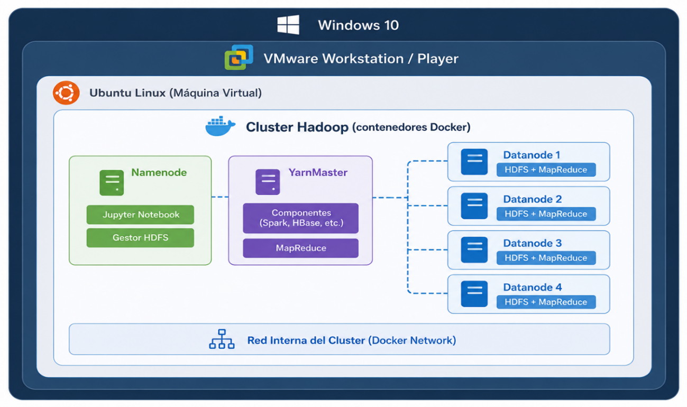

Capítulo 4.2 Despliegue de la infraestructura
Despliegue de la infraestructura
Despliegue de la infraestructura
Una de las principales ventajas de utilizar Docker para implementar un clúster Hadoop es la elevada portabilidad y escalabilidad que ofrecen los contenedores. Estos pueden trasladarse fácilmente entre distintos equipos y replicarse de forma rápida para aumentar la capacidad del clúster sin necesidad de realizar configuraciones complejas.
Con el objetivo de proporcionar un entorno de trabajo aislado, reproducible y fácilmente distribuible, la infraestructura desarrollada en este proyecto se ha desplegado sobre una máquina virtual gestionada mediante VMware® Workstation 17 Pro. Esta solución permite ejecutar un sistema operativo invitado completamente independiente del sistema anfitrión, facilitando la instalación, configuración y mantenimiento de todas las herramientas que forman parte del ecosistema Big Data.
El sistema anfitrión ejecuta Microsoft Windows 11, mientras que la máquina virtual utiliza Ubuntu 22.04.4 LTS, distribución seleccionada por su estabilidad, compatibilidad con Docker y soporte de largo plazo. Los recursos asignados han sido dimensionados para permitir la ejecución simultánea del clúster Hadoop y del resto de aplicaciones empleadas durante el desarrollo del proyecto.
| Componente | Configuración |
|---|---|
| Software de virtualización | VMware® Workstation 17 Pro |
| Sistema operativo anfitrión | Microsoft Windows 11 |
| Sistema operativo invitado | Ubuntu 22.04.4 LTS |
| Memoria RAM | 9 GB |
| Disco virtual | 53,7 GB |
| Memoria de vídeo | 128 MB |

Figura. Entorno de virtualización utilizado para el despliegue del laboratorio.
En una infraestructura Hadoop tradicional es necesario desplegar múltiples máquinas virtuales, cada una con su propio sistema operativo, aplicaciones, dependencias y configuraciones específicas. Este enfoque incrementa el consumo de memoria, almacenamiento y recursos de procesamiento, además de obligar a repetir el mismo proceso de instalación y configuración en cada nodo del clúster.
La infraestructura desarrollada en este proyecto adopta un enfoque basado en virtualización ligera mediante contenedores Docker. Para ello se utiliza una imagen base previamente configurada con todas las tecnologías necesarias, que posteriormente se replica para construir los diferentes nodos del clúster. Esta estrategia reduce significativamente el consumo de recursos, simplifica el despliegue, facilita la administración del entorno y permite escalar la infraestructura de forma rápida y reproducible mediante Docker Compose.
A partir de la imagen base se construye un clúster Hadoop compuesto por un total de seis nodos especializados, cada uno con una función específica dentro de la arquitectura distribuida.
| Nodo | Función |
|---|---|
| 1 NameNode | Gestiona HDFS y coordina el sistema de archivos distribuido. Además incorpora Jupyter Notebook, Apache Hive y Apache Flume. |
| 1 YarnManager | Administra los recursos del clúster y coordina la ejecución de trabajos MapReduce mediante YARN. |
| 4 DataNodes | Almacenan los bloques de datos en HDFS y ejecutan las tareas distribuidas de procesamiento MapReduce. |

Figura 19. Arquitectura del clúster Hadoop desplegado mediante contenedores Docker.
La utilización de contenedores Docker permite disponer de un entorno distribuido completamente funcional capaz de simular un clúster Hadoop real para el desarrollo de prácticas de Big Data. Toda la infraestructura puede desplegarse, replicarse y actualizarse de forma sencilla utilizando Docker Compose y los archivos del proyecto disponibles en el repositorio GitHub.